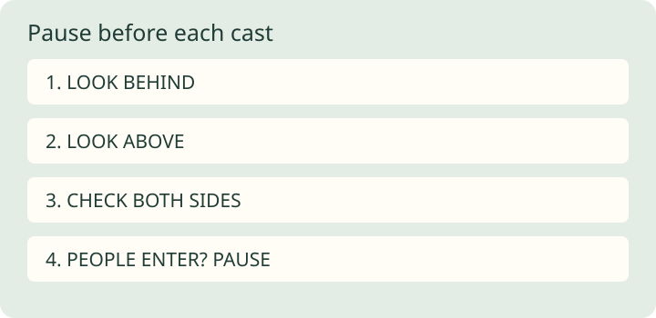

Your first freshwater outing: prepare before you cast
A quiet practice session is a useful first goal. Catching a fish is not a requirement for learning.
Before leaving
Choose a specific place, then check its official access information and current fishing rules. Confirm license requirements, permitted methods, bait restrictions and any closures for that location. Do not assume rules at another water apply here. Pack the permitted tackle, drinking water, weather protection and a way to carry discarded line home.
Practice before fishing
Practice safe casting in an open area with a hookless practice weight. Look behind, above and to both sides before each cast. Stop if someone enters the casting space. At the water, choose stable footing and keep the hook away from people while moving or rigging. If the space is crowded or obstructed, move or pause.
Set up a manageable session
Prepare pliers and a suitable landing net before casting. Decide how you will handle a fish before one is on the line. Keep loose hooks contained and retrieve discarded line. End the session if conditions or access feel unsafe; a return visit is an acceptable outcome.
Limits
This is a preparation sequence for a simple freshwater shore outing, not boating, wading or emergency instruction. Site conditions and local guidance determine whether a place is appropriate. The source below provides first-time fishing guidance; this checklist is our original organization, not a local legal summary.

Production and sources
AI-assisted writing and original SVG production. Sources were checked during local preparation. This is general educational material, not personalized instruction or a report of a fishing trip.